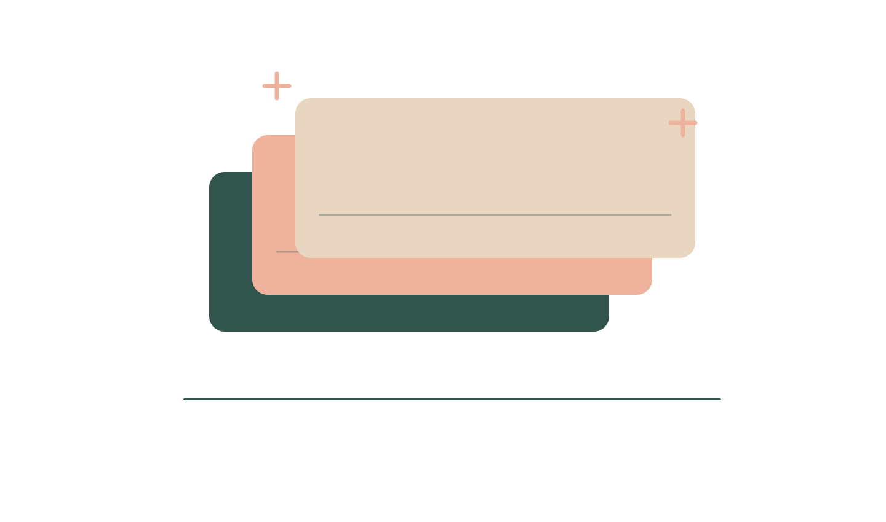
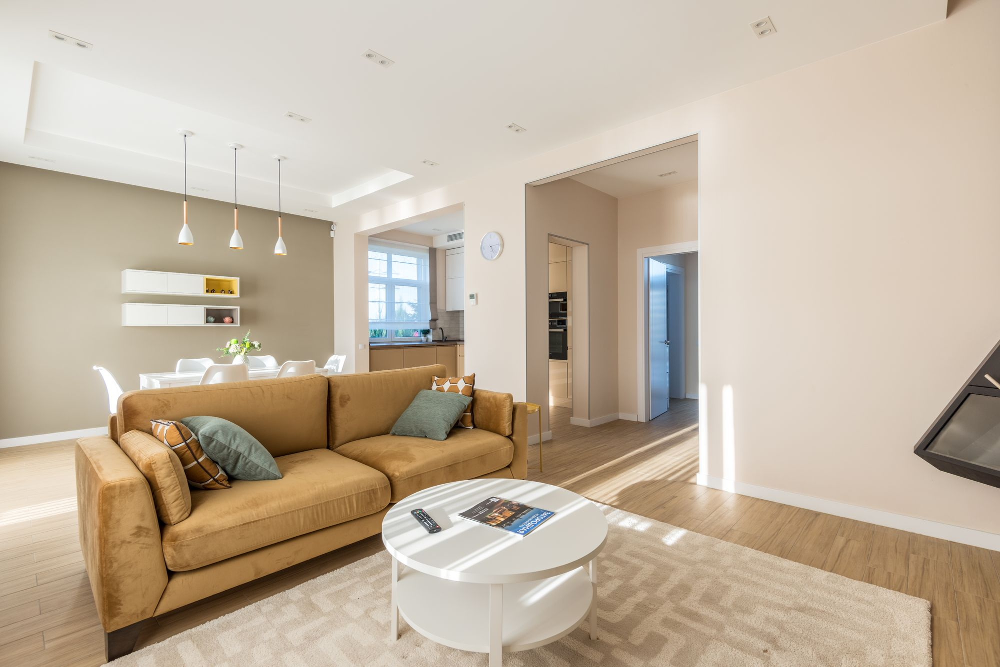
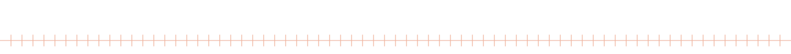
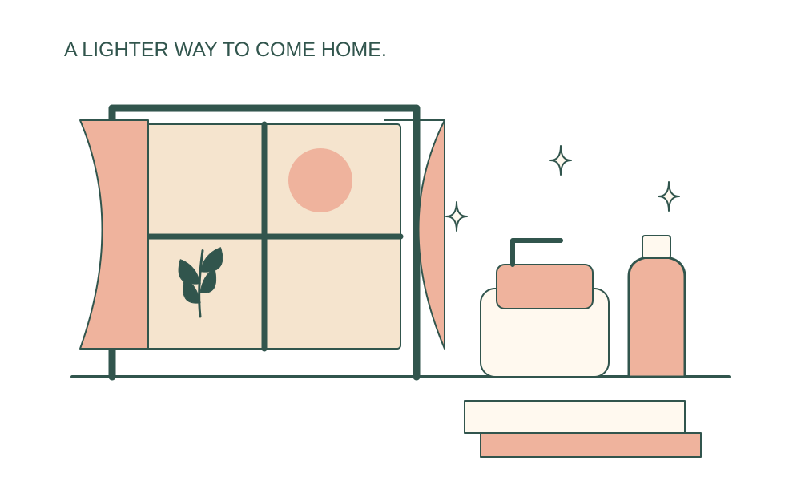
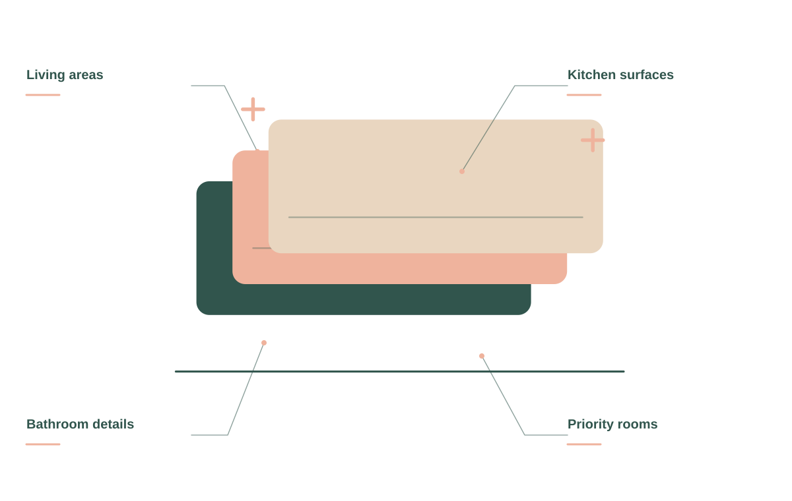
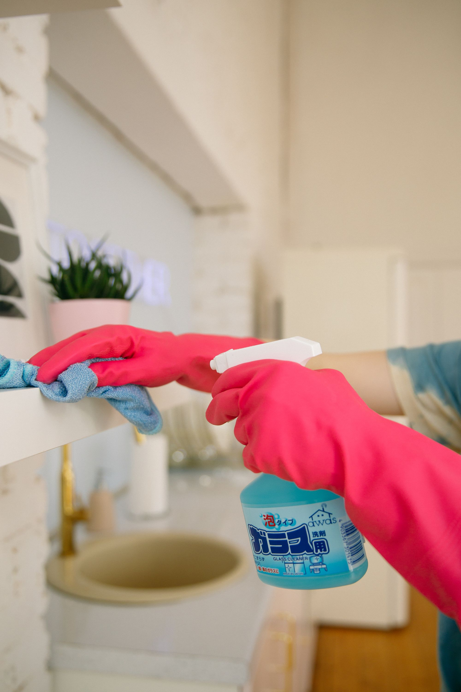
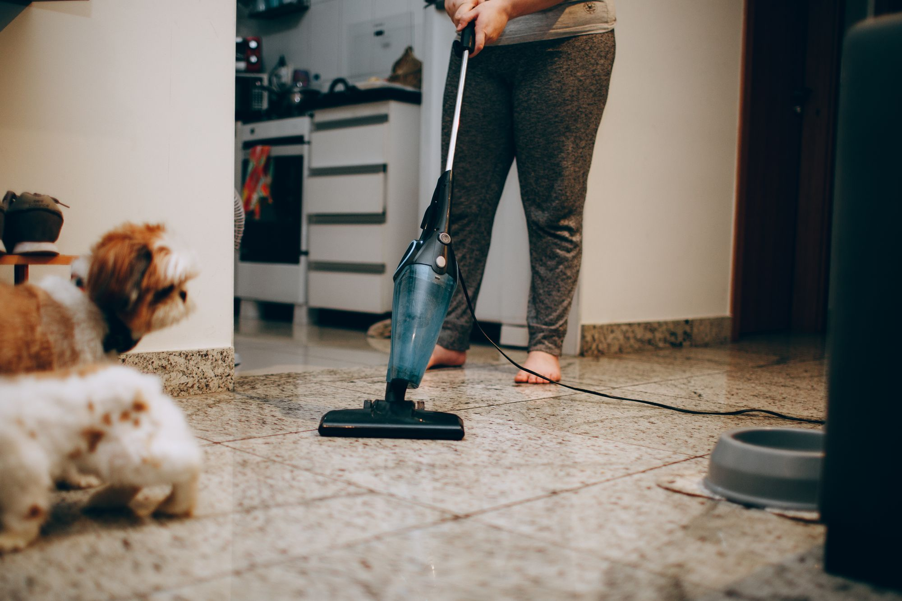
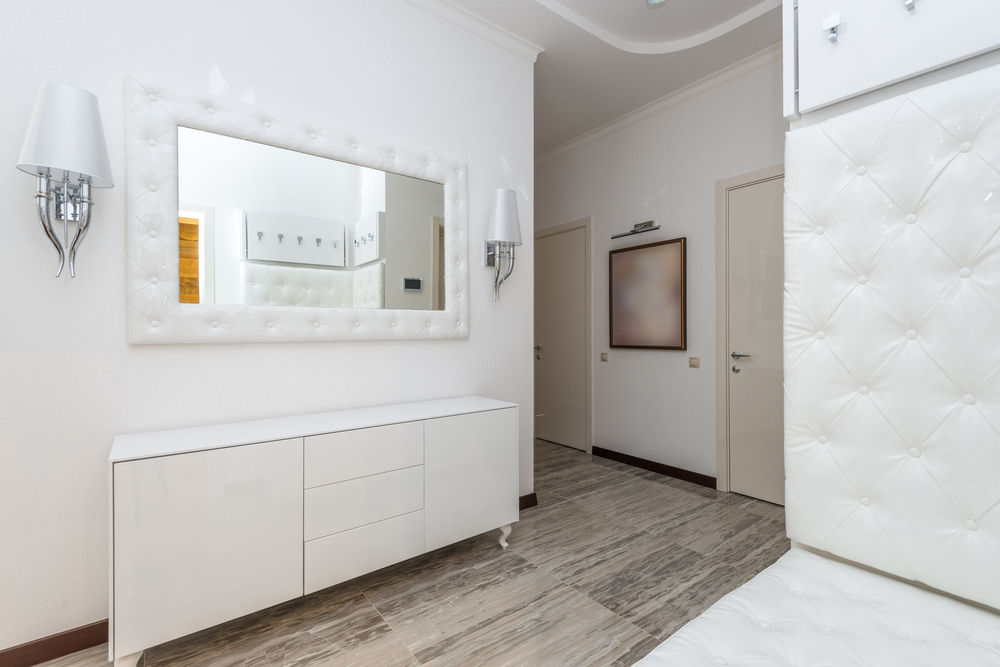
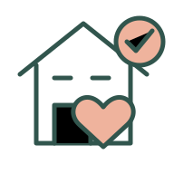

Recurring cleaning
A regular clean around your household’s routine.

A thoughtful clean for the home you live in, and the time you want back.
Find your kind of clean ↗


A regular clean around your household’s routine.
More attention for the corners that need a fresh start.
A practical clean for the start of a new chapter.
Get your home ready for guests or simply reset the week.
A useful cleaning plan reflects the home you actually live in. Start with the rooms, the routine, and the details you want someone to pay attention to.

SUNDAY / THE DETAILS MATTERDiscuss the rooms and tasks you want included in recurring visits, along with access and household preferences.
Share the areas that need more time and attention so the scope is clear before the visit.
Moving in, moving out, or getting ready for guests starts with an agreed list and a practical plan.

Tell us how you use your home, what needs extra attention, and what a good clean looks like to you. We’ll agree on the checklist before the visit.


Share the rooms, routine, and details that matter.
Agree on the checklist and the visit plan.

A cleaner home. A little less to do.
When you get in touch, a little context goes a long way. These are the details that help us start a useful conversation about your house cleaning project.
Tell us what you have in mind ↗Tell us about rooms to include so the conversation starts with your situation.
A few details about priority areas help us understand what you need.
Share household preferences when you get in touch, including photos where useful.
Let us know about access and timing so the proposed scope reflects your priorities.
We’ll confirm supplies and equipment when arranging the visit. Let us know about any product preferences or sensitivities.
Yes. Share your priorities when we agree on the cleaning checklist and scope.
Yes. A one-time visit can help establish what you’d like from an ongoing cleaning plan.